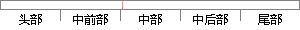

当系统的环境准备好后，就可以开始载入操作系统内核并开始运行了。
片段位置图

相似结果
相似片段：它在系统上电时开始执行,初始化硬件设备,准备好软件环境,最后调用操作系统内核。...{r5-r7)严然后将编译时生成的.__proc_info__begin虚拟地址载入到r5,procin...
| 标题 | 《移动终端的系统软件研究和实现》 |
| 对比库 | 中国学位论文全文数据库 |
| 作者 | 杨少辉 |
| 机构 | 西安电子科技大学 |
| 分类 | 电路与系统 |
| 年份 | 2010 |
| 相似率 | 79.17% （轻度抄袭） |
※ 片段修改建议 ※
近似词参考：- 环境：情况
- 开始：起头 入手下手 最先
- 就可以：就能够 就能
- 系统：体系
系统自动生成语句：当体系的情况准备好后，就能够起头载入操作体系内核并起头运行了。
注：本片段修改建议为系统自动生成，仅供参考。